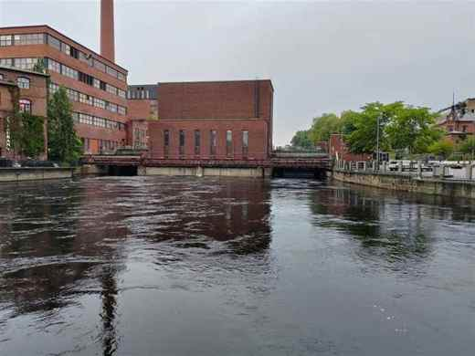
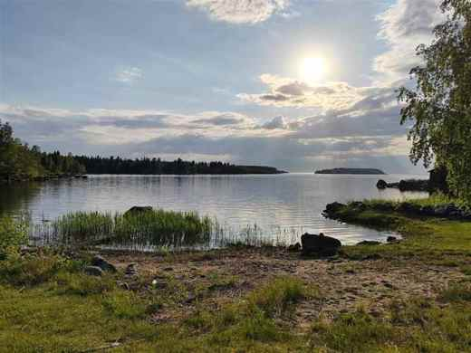

01 · Evening light
The long way home
The low evening sun lights a wooden building and stretches tree shadows across a quiet city street.
Three views · One city walk
Light, brick, and moving water: small details that make an ordinary walk memorable.
← Back to the home page01 · Evening light
The low evening sun lights a wooden building and stretches tree shadows across a quiet city street.

02 · By the water
Old brick buildings and a low bridge line the riverbank, reminders of the city's industrial past.

03 · At the shoreline
The city walk gives way to open water, reeds at the edge, and the last sun above the lake.